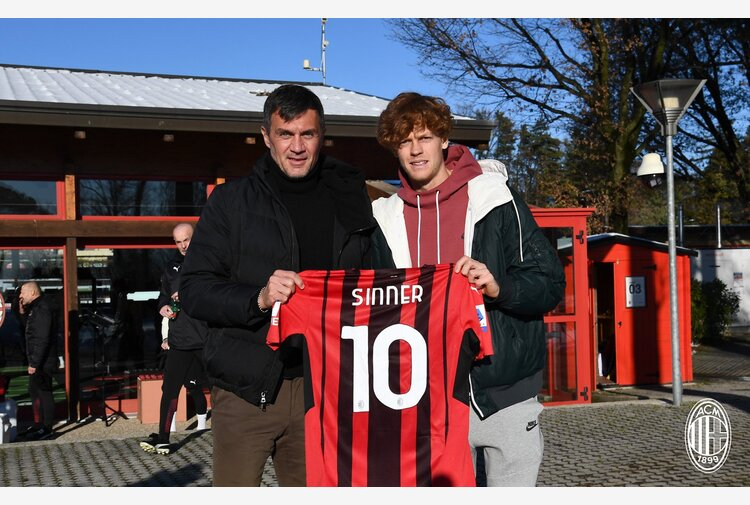

Originario di Sesto Pusteria, proviene da una famiglia di madrelingua tedesca: i genitori Siglinde e Hanspeter lavorano entrambi presso il rifugio Fondovalle (Talschlusshütte) in Val Fiscalina (immagine a lato). Ha un fratello adottivo di nome Mark.
Originario di Sesto Pusteria, proviene da una famiglia di madrelingua tedesca: i genitori Siglinde e Hanspeter lavorano entrambi presso il rifugio Fondovalle (Talschlusshütte) in Val Fiscalina (immagine a lato). Ha un fratello adottivo di nome Mark.
Originario di Sesto Pusteria, proviene da una famiglia di madrelingua tedesca: i genitori Siglinde e Hanspeter lavorano entrambi presso il rifugio Fondovalle (Talschlusshütte) in Val Fiscalina (immagine a lato). Ha un fratello adottivo di nome Mark.
A quattro anni comincia a praticare lo sci, ottenendo ottimi risultati a livello nazionale in slalom gigante. Nel tennis inizia a cimentarsi all'età di 8 anni, allenandosi in provincia di Bolzano con i maestri Heribert Mayr e Andrea Spizzica. In ragione soprattutto della lunghezza degli allenamenti sciistici, sproporzionati a suo parere rispetto alla brevità delle competizioni alpine, a 13 anni opta definitivamente per il tennis e nell'estate del 2014, su suggerimento di Massimo Sartori, si trasferisce a Bordighera, dove viene seguito fino al febbraio 2022 da Riccardo Piatti e Andrea Volpini.
Ha frequentato le scuole superiori all'istituto tecnico Walther di Bolzano fino al quarto anno, proponendosi di riprendere gli studi per conseguire la maturità. Nel 2020 ha trasferito la propria residenza anagrafica e fiscale nel Principato di Monaco. Oltre all'italiano e al tedesco, parla l'inglese. Ritiene che il suo miglior pregio consista nel saper mantenere la calma. È tifoso del Milan.
